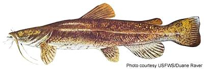

Flathead Catfish

[Mississippi Catfish, Yellow Catfish, Opelousa Catfish, Mud Catfish,
Shovelhead Catfish, Pylodictis olivaris]
This catfish is native to the Mississippi River drainage basin from the
lower Great Lakes to the mouth of the Mississippi. Because it's such
a popular game fish it has been introduced to other rivers, generally
with severe negative impact on native fish populations. Most catfish are
scavengers, but this one is a predator. In adulthood it eats nothing but
other fish. This fish can grow to about 4 feet long and over 120 pounds.
Illustration by U.S. Fish and Wildlife Service = public
domain.
More on Catfish
This catfish is very edible but considered not quite as good as the
Channel Catfish or the Blue Catfish - but it gets nearly as large as the
Blue.
Buying:
This fish is not farmed commercially - it's diet
of live fish would make that too costly, so it is not available outside
the region where it can be caught wild. For the most part it is a sport
fish.
Prep & Cooking:
Except for its carnivorous diet and
brown or yellow color this catfish is pretty much like others. See the
page for Channel Catfish for
details.
sf_catfhz* 090518 - www.clovegarden.com
©Andrew Grygus - agryg@clovegaden.com - Photos on this
page not otherwise credited are © cg1 -
Linking to and non-commercial use of this page permitted